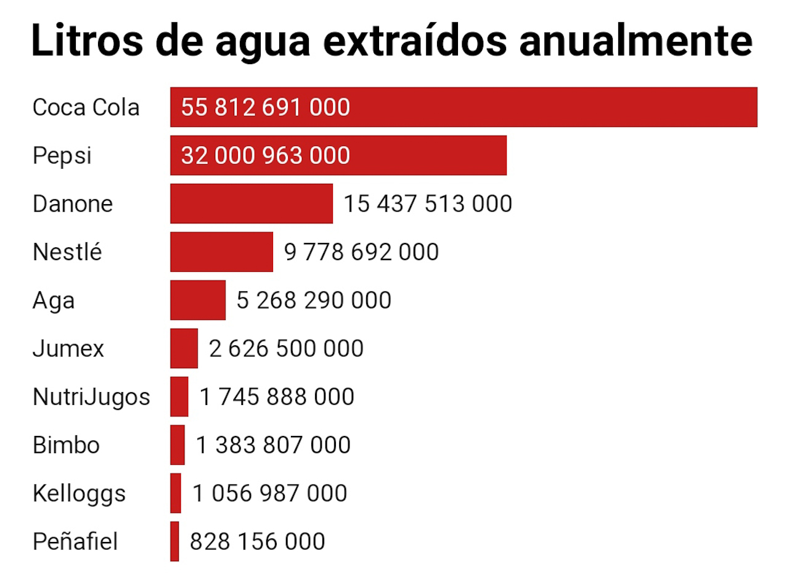
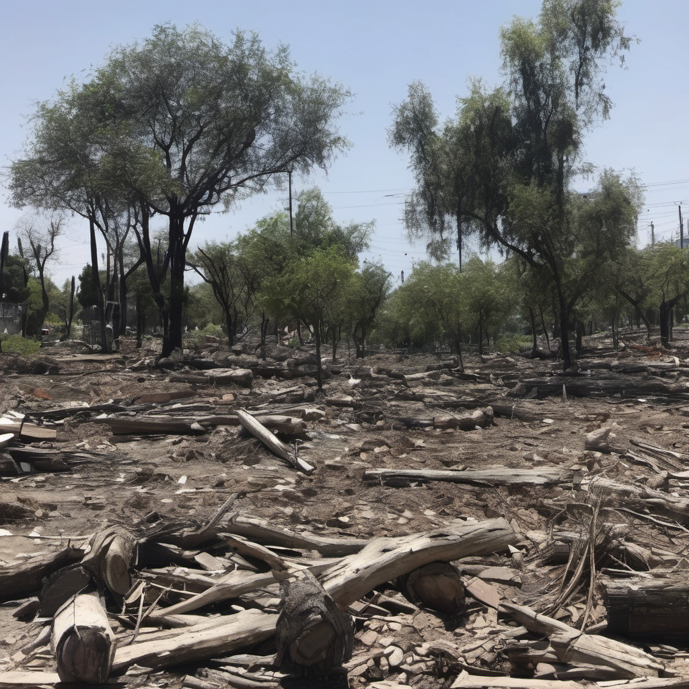
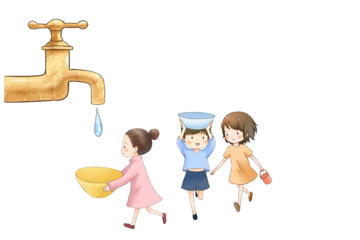
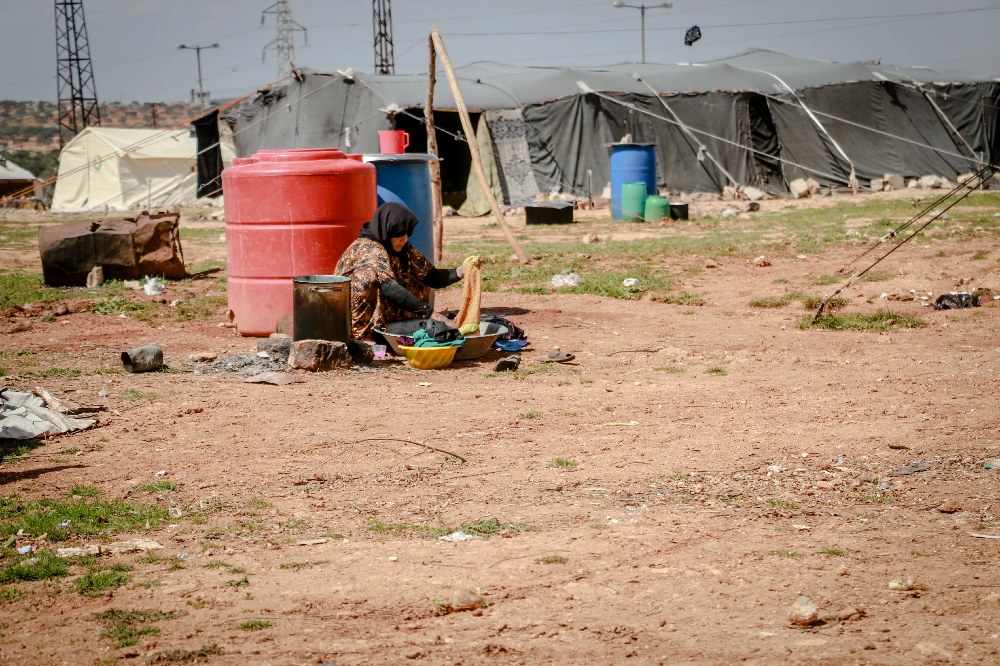
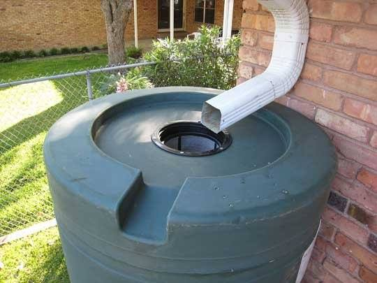

GOTA A GOTA
CRISIS DE AGUA EN MEXICO
México atraviesa una de las mayores crisis de agua debido a una gran sequía provocada principalmente por patrones climáticos como “El Niño” y “La Niña”, que alteran el régimen de las lluvias, y más siendo un país que la mayoría de su territorio se encuentra en zonas áridas o desérticas. Le deforestación, la sobreexplotación de recursos hídricos, la intensa actividad agrícola y la extracción excesiva de agua para uso industrial y doméstico agotan los acuíferos, prolongando la sequía en muchas regiones del país. Mucho tiene que ver nuestro propio consumismo, nuestra falta de consciencia ante esta problemática. Gran parte del consumo de agua para la industria se debe a las empresas de comida ultra procesada que consumimos a diario. Empresas como Coca-Cola, Pepsi, Danone, Nestlé, Bimbo, entre otras, extraen anualmente 133 mil millones de litros de agua (sin tomar en cuenta que esta cifra podría ser incluso más alta, debido a que la CONAGUA incumple su función al no tener un registro claro y una regulación sobre el agua que consumen las empresas).
Coca-Cola necesita 35.4 l de agua para producir medio litro de refresco. La refresquera más grande del mundo, Coca Cola, no sólo lleva a todos los rincones de México sus productos, sino que consume el agua en cada uno de los 32 estados del país de dónde extrae más de 55 mil millones de litros de agua al año.
En Toluca se encuentra la planta de Coca Cola más grande de América Latina, que produce más de 300 millones de cajas al año. En dicha ciudad la refresquera tiene permitido extraer más de 3 mil millones de litros anuales pese al extremadamente alto estrés hídrico en la zona.

La refresquera ha extendido su crecimiento en el sureste, Yucatán es el tercer estado con más concesiones de agua para chatarra, en Mérida hay 17 pozos de Coca Cola con una autorización para extraer 4 mil 400 millones de litros de agua. El 49% de los meridanos tienen diabetes, esto no sorprende, Yucatán es una de las entidades donde más se consume refresco, con un promedio de 240 litros al año por yucateco, según reconoció Juan Luis Mac Gregor, director de comercialización de Bepensa, embotelladora de Coca Cola, que extrae al año 9 mil 500 millones de litros, siendo así la compañía de productos chatarra que más agua extrae en el país. En Toluca se encuentra la planta de Coca Cola más grande de América Latina, que produce más de 300 millones de cajas al año. En dicha ciudad la refresquera tiene permitido extraer más de 3 mil millones de litros anuales pese al extremadamente alto estrés hídrico en la zona. Aunado a la problemática de las refresqueras, tenemos el problema de la deforestación. En 20 años, México ha perdido 736 mil hectáreas de bosques primarios, lo suficiente para cubrir casi cinco veces su capital, Ciudad de México, confirman datos de la plataforma de monitoreo satelital Global Forest Watch (GFW). Y esto es solo algo más del 15 por ciento del total de cobertura forestal perdida, unos 4,7 millones de hectáreas. La tala ilegal y la deforestación nos conducen al cambio climático y además: Ponen en riesgo el bienestar de las personas y el patrimonio natural del país. Causan el desplazamiento de poblaciones originarias. Aceleran la pérdida de los suelos, de la fauna, de la flora y de la biodiversidad.

La sequía en México tiene consecuencias graves y múltiples en el medio ambiente, la economía, la salud y la sociedad. Algunas de las más importantes son: Consecuencias ambientales: la sequía afecta la biodiversidad, los ecosistemas y los servicios ambientales que estos proveen. La sequía reduce la productividad primaria, la biomasa y la diversidad de especies vegetales y animales, lo que altera el funcionamiento y la estructura de los ecosistemas. La sequía también favorece la ocurrencia de incendios forestales, la erosión del suelo, la salinización, la desertificación y la pérdida de hábitats.
Consecuencias económicas: la sequía impacta negativamente en la economía, especialmente en los sectores que dependen del agua, como la agricultura, la ganadería, la pesca, la industria y el turismo. La sequía reduce la producción, la calidad y la rentabilidad de los cultivos, el ganado y los productos pesqueros, lo que afecta la seguridad alimentaria, el ingreso y el empleo de los productores. La sequía también genera pérdidas económicas por daños en la infraestructura, el transporte, la energía y el comercio.
Consecuencias sociales: la sequía afecta la calidad de vida, el bienestar y los derechos
humanos de la población, especialmente de los grupos más vulnerables, como los indígenas, los campesinos, las mujeres y los niños.
La sequía provoca escasez, racionamiento y encarecimiento del agua potable, lo que
limita el acceso al recurso y afecta la higiene, la salud y la nutrición de las personas.
La sequía también genera desplazamiento, migración, pobreza, marginación, conflictos y
violencia social.
Consecuencias sanitarias: la sequía tiene efectos negativos en la salud física y mental de las
personas y los animales.
La sequía aumenta el riesgo de enfermedades infecciosas, parasitarias y gastrointestinales,
así como de intoxicaciones y alergias, debido a la contaminación y la escasez de agua. La
sequía también favorece la aparición y propagación de plagas y vectores, como mosquitos,
roedores e insectos, que pueden transmitir enfermedades como el dengue, la malaria, el
zika, la leptospirosis y el hantavirus. La sequía también causa estrés, ansiedad, depresión y
suicidio, debido a la incertidumbre, la pérdida y el sufrimiento que genera.
ACCIONES PARA CUIDAR EL AGUA
Acciones individuales: se refieren a las acciones que podemos realizar cada uno de
nosotros en nuestro ámbito personal, familiar y comunitario, para cuidar y usar responsablemente el agua.
Algunas de estas acciones son:
• Ahorrar agua en el hogar, la escuela y el trabajo, evitando el desperdicio y el uso innecesario.
• Reutilizar el agua que sea posible, por ejemplo, para regar las plantas o limpiar el piso.
• Utilizar productos biodegradables y evitar el vertido de sustancias contaminantes al drenaje o a los cuerpos de agua.
• Participar en campañas de reforestación, conservación y restauración de los ecosistemas que proveen y regulan el agua.
• Informarse y educarse sobre el valor y la importancia del agua, así como sobre los riesgos y las consecuencias de la sequía.
• Denunciar y exigir el cumplimiento de las normas y los derechos relacionados con el agua.
Acciones colectivas: se refieren a las acciones que podemos realizar en conjunto con
otros actores sociales, como organizaciones, empresas, instituciones y gobiernos,
para gestionar y aprovechar el agua de manera sustentable y equitativa.
Algunas de estas acciones son:
• Promover la participación y la cooperación con implementación de políticas colectivas para su cuidado.
• Invertir y desarrollar infraestructura para captar el agua y tratarla.
• Fomentar la investigación y el monitoreo científico.
• Aplicar y hacer cumplir la legislación y la normatividad vigente en materia de agua y sequía, así como los acuerdos y compromisos internacionales suscritos por México.
• Fortalecer la educación y la cultura del agua, así como la sensibilización y la comunicación social sobre la importancia y la urgencia de enfrentar la sequía.
 Se requiere de un esfuerzo continuo, coordinado y solidario de todos los actores sociales para lograr una gestión sustentable y una adaptación resiliente al cambio climático y a la sequía. El agua es un recurso vital, pero también escaso y vulnerable. Cuidémosla y usémosla responsablemente.